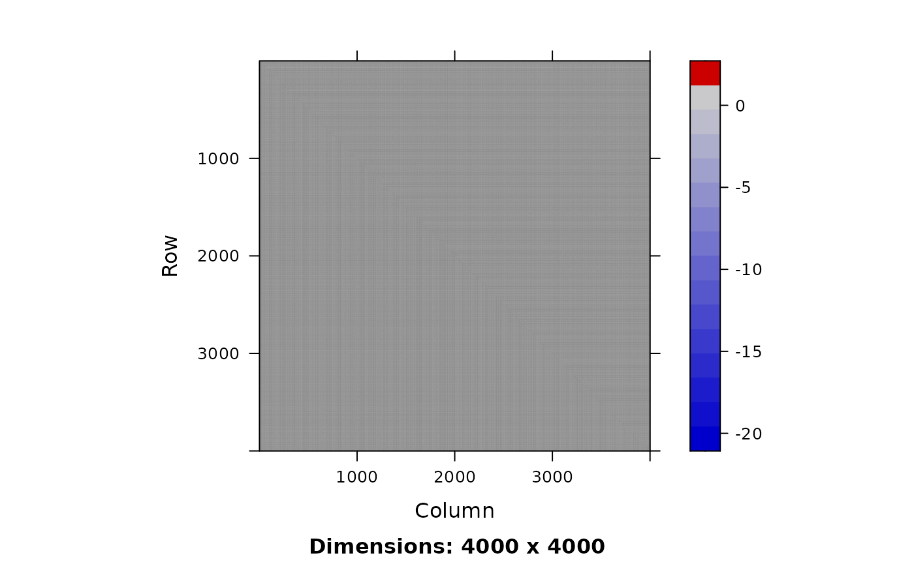

Lanczos methods for penalized and marginal likelihood models
James T. Thorson
Source:vignettes/lanczos.Rmd
lanczos.RmdThis vignette demonstrates how Lanczos methods can be used to approximate standard errors and epsilon bias-correction for penalized likelihood models, without directly forming or inverting the Hessian matrix representing associations among random effects.
Generalized linear mixed model
We first demonstrate Lanczos methods using a simple generalized linear mixed model.
Simulate from a GLMM
We first simulate data from a compound lognormal-Gamma process:
set.seed(123)
n = 30
n_sum = 3
# log-linked normal deviates
u = 0 + rnorm(n)
# Conditional gamma process
y = rgamma( n, shape = 1/0.5^2, scale = exp(u) * 0.5^2 )We then define a function to compute the joint likelihood, while also allowing us to calculate other outputs for later use:
nll = function(p){
sumexpu = sum(exp(p$u[seq_len(n_sum)]))
ADREPORT( sumexpu )
REPORT( sumexpu )
nll1 = dnorm(p$u, mean=p$mu, sd=exp(p$logsd), log=TRUE)
nll2 = dgamma(
y,
shape = 1/exp(2*p$logcv),
scale = exp(p$u) * exp(2*p$logcv),
log=TRUE
)
jnll = -1 * ( sum(nll1) + sum(nll2) )
if(what == "jnll") return(jnll)
if(what == "sumexpu") return(sumexpu)
if(what == "biascorr") return(jnll + p$eps * sumexpu)
}
# Starting list of parameters
parlist = list(u=u*0, mu = 0, logsd = 0, logcv = 0, eps = 0)Finally, we fit this model as a log-linked generalized linear mixed model (GLMM):
# Build RTMB object
what = "jnll"
obj = RTMB::MakeADFun(
nll,
parlist,
map = list(eps = factor(NA)),
random = "u",
silent = TRUE
)
# optimize
opt = nlminb( obj$par, obj$fn, obj$gr )
opt
#> $par
#> mu logsd logcv
#> -0.1052225 -0.1326400 -0.5984998
#>
#> $objective
#> [1] 36.46907
#>
#> $convergence
#> [1] 0
#>
#> $iterations
#> [1] 13
#>
#> $evaluations
#> function gradient
#> 17 14
#>
#> $message
#> [1] "relative convergence (4)"Fit as marginal likelihood without Cholesky decomposition
We first show that we can re-fit the model using the marginal likelihood, evaluated using Hutchinson-Lanczos instead of the Cholesky factorization that is default in TMB:
parlist$eps = numeric()
pen0 = lanczos_MakeADFun(
nll,
parlist,
random = "u",
k = 10,
silent = TRUE
)
# optimize
opt_pen0 = nlminb( pen0$par, pen0$fn )
opt_pen0
#> $par
#> mu logsd logcv
#> -0.1084795 -0.1284993 -0.6074894
#>
#> $objective
#> [1] 36.46912
#>
#> $convergence
#> [1] 1
#>
#> $iterations
#> [1] 11
#>
#> $evaluations
#> function gradient
#> 31 35
#>
#> $message
#> [1] "false convergence (8)"Fit as a penalized likelihood model
Next, we show that the model can be refitted using penalized likelihood, conditional upon fixed values for variance parameters:
# Define RTMB object for penalized likelihood
newmap = list(
mu = factor(NA),
logsd = factor(NA),
logcv = factor(NA),
eps = factor(NA)
)
pen = RTMB::MakeADFun(
nll,
obj$env$parList(),
map = newmap,
silent = TRUE
)
# Re-optimize
opt_pen = nlminb( pen$par, pen$fn, pen$gr )Alternatively, we provide a Newton optimizer using a truncated conjugate gradient, which operates using Hessian-vector products without ever forming the full Hessian matrix:
# Extract tape and make Hessian-vector-product function
tape = GetTape(pen)
Hq = make_Hq( tape, pen$par )
# run Newton optimizer
opt_pen2 = newton_CG(
par = pen$par,
fn = tape,
gr = tape$jacfun(),
Hq = Hq
)
#> value: 41.78943 mgc: 9.836576e-13 ustep: 0.9999We can then use stochastic trace estimation and the Lanczos method to approximate the log-determinant of the Hessian for random effects:
# log-determinant using Lanczos
Hq = make_Hq( GetTape(pen), opt_pen$par )
lanczos_logdet( Hq, k = 10, m = 3 )
#> [1] 44.4956 44.4956 44.4956
# log-determinant for marginal likelihood
H = obj$env$spHess(par = obj$env$last.par.best, random = TRUE)
Matrix::determinant( H )$modulus
#> [1] 44.4956
#> attr(,"logarithm")
#> [1] TRUEUsing this log-determinant, we can also compare the log-marginal likelihood using Lanczos with the full calculation:
# Marginal likelihoods using Lanczos
lanczos_nll( pen, k = 10, m = 10 )
#> nll sd_nll
#> 36.46907 0.00000
# Marginal likelihood using Laplace
opt$obj
#> [1] 36.46907Delta methods
Alternatively, we can apply Lanczos methods to standard errors for parameters. Here, we will sample the first three random effects
samples = lanczos_sample(
Hq = Hq,
q = c( rep(1,3), rep(0,n-3) ),
k = 30,
n = 1000,
orthogonalize = TRUE
)
#
sdrep = sdreport( obj, ignore.parm.uncertainty = TRUE )
as.list(sdrep, what = "Std. Error")$u[1:3]
#> [1] 0.4839019 0.4864751 0.4066186
apply( samples, MARGIN = 1, FUN = sd)[1:3]
#> [1] 0.4782002 0.4887318 0.4051458Alternatively, we can apply Lanczos methods to approximate the Hessian with respect to a derived quantity. This involves calculating the gradient for the derived quantity with respect to coefficients:
what = "sumexpu"
grad = RTMB::MakeADFun(
nll,
obj$env$parList(),
map = newmap,
silent = TRUE
)$gr( pen$par )[1,]We can then use this gradient to approximate samples from the Hessian matrix and use that to calculate a Monte Carlo estimator for standard errors:
samples = lanczos_sample(
Hq = Hq,
q = grad,
k = 30,
n = 1000,
orthogonalize = TRUE
)
# Compare SD of samples with the delta method
sumexpu1 = apply( samples, MARGIN = 2, FUN = \(v)pen$report(v)$sumexpu )
c( pen$report()$sumexpu, sd(sumexpu1) )
#> [1] 4.0641214 0.9435151
summary(sdrep)['sumexpu',]
#> Estimate Std. Error
#> 4.064121 1.194484Alternatively, we can calculate the standard error for a derived quantity using Lanczos within the delta method:
#
Var = lanczos_variance(
Hq = Hq,
q = grad,
k = 3
)
# Compare with the delta method
c( pen$report()$sumexpu, sqrt(Var) )
#> [1] 4.064121 1.194484
summary(sdrep)['sumexpu',]
#> Estimate Std. Error
#> 4.064121 1.194484Epsilon methods
Finally, we can use the gradient of the log-likelihood with respect to a dummy variable epsilon to correct for retransformation bias:
# One-sided finite difference
what = "biascorr"
phat = obj$env$parList()
phat$eps = 0.0001
pen_hi = RTMB::MakeADFun(
nll,
parameters = phat,
map = newmap,
silent = TRUE
)
# Re-optimize
opt_hi = optim(
pen_hi$par, pen_hi$fn, pen_hi$gr,
method = "L-BFGS-B", control = list(factr = 1e-2)
)
# Calculate marginal nll for finite-difference
nll_hi = lanczos_nll( pen_hi, k = 10, m = 10, seed = 123 )
nll_mid = lanczos_nll( pen, k = 10, m = 10, seed = 123 )
# Epsilon bias-correction estimator
sdrep = sdreport( obj, bias.correct = TRUE )
#
(nll_hi['nll'] - nll_mid['nll']) / (phat$eps)
#> nll
#> 4.733918
summary(sdrep)['sumexpu',]
#> Estimate Std. Error Est. (bias.correct) Std. (bias.correct)
#> 4.064121 1.625808 4.734025 NASpatial change of support
Next, we fit a model that involves spatial change of support, which breaks sparsity in the inner Hessian. We again simulate data from the change-in-support process:
# Settings
set.seed(123)
nx = 10^1
ny = 10^2
rho = 0.9
# Simulate AR1 process approaching random walk (i.e., ill-conditioned inner problem)
Px = bandSparse( n = nx, k = c(-1,1), diagonals = list(rep(0.5,nx),rep(0.5,nx)) )
Py = bandSparse( n = ny, k = c(-1,1), diagonals = list(rep(0.5,ny),rep(0.5,ny)) )
Ix = Diagonal(n=nx)
Iy = Diagonal(n=ny)
Qx = (Ix - rho * t(Px)) %*% (10 * Ix) %*% (Ix - rho * Px)
Qy = (Iy - rho * t(Py)) %*% (10 * Iy) %*% (Iy - rho * Py)
Q = kronecker( Qy, Qx )
x = RTMB:::rgmrf0( n= 1, Q = Q )[,1]
y = rpois( nx*ny, lambda = exp(1 + x) )
which_seen = sample( seq_len(nx*ny), size = nx*ny/100, replace = FALSE)
sumy = sum(y)
#y[-which_seen] = NAWe then define the joint likelihood that includes a term for the total across samples:
nll = function(p){
Qx = (Ix - plogis(p$invlogis_rho) * t(Px)) %*% (exp(2*p$logtau) * Ix) %*% (Ix - plogis(p$invlogis_rho) * Px)
Qy = (Iy - plogis(p$invlogis_rho) * t(Py)) %*% (exp(2*p$logtau) * Iy) %*% (Iy - plogis(p$invlogis_rho) * Py)
Q = kronecker( Qy, Qx )
loglik1 = dgmrf(p$x, Q = Q, log = TRUE)
loglik2 = sum(dpois(y, exp(p$mu + p$x), log=TRUE), na.rm=TRUE)
loglik3 = dnorm(log(sumy), log(sum(exp(p$mu + p$x))), sd = 0.01, log = TRUE)
-1 * ( loglik1 + loglik2 + loglik3 )
}
parlist = list( x=rnorm(nx*ny), logtau = 0, invlogis_rho = 0, mu = 0 )We then fit this as normal in RTMB:
start_time = Sys.time()
obj_RTMB = MakeADFun(
nll,
parlist,
random = "x",
silent = TRUE
)
opt_RTMB = nlminb( obj_RTMB$par, obj_RTMB$fn, control = list(trace = 1) )
#> 0: 2280.0939: 0.00000 0.00000 0.00000
#> 1: 2207.2635: 0.127215 -0.00624317 0.00846231
#> 2: 2177.1001: 0.251238 0.00562723 0.0362419
#> 3: 2138.5541: 0.261331 0.180753 0.221731
#> 4: 2102.8547: 0.600013 0.413495 0.524771
#> 5: 2044.0344: 0.571580 0.920853 0.574647
#> 6: 2019.8392: 0.824137 1.36282 0.614486
#> 7: 2017.8952: 0.805356 1.47898 0.761772
#> 8: 2015.2160: 0.861372 1.41749 0.848267
#> 9: 2013.6575: 0.876790 1.51700 0.782993
#> 10: 2013.3776: 0.938107 1.56295 0.772027
#> 11: 2011.8855: 0.927086 1.59856 0.839867
#> 12: 2010.8796: 0.959770 1.72751 0.760672
#> 13: 2009.4383: 1.02311 1.85599 0.819386
#> 14: 2008.9140: 1.07910 1.99520 0.857520
#> 15: 2008.8848: 1.09254 2.03390 0.865277
#> 16: 2008.8843: 1.09379 2.03863 0.866307
#> 17: 2008.8843: 1.09374 2.03871 0.866424
#> 18: 2008.8843: 1.09371 2.03865 0.866449
opt_RTMB$run_time = Sys.time() - start_timeWe can see that the Hessian is dense:
Matrix::image( obj_RTMB$env$spHess(random=TRUE) )
Alternatively, we can fit this using Lanczos methods, which are less sensitive to the lack-of-sparsity. Here, we avoid constructing the gradient of the Laplace-Lanczos approximation to the log-marginal likelihood, pending improvements:
start_time = Sys.time()
obj = lanczos_MakeADFun(
nll,
parlist,
random = "x",
k = 40,
make_gr = FALSE,
silent = TRUE
)
opt = nlminb(
obj$par,
\(x) obj$fn(x),
control = list(trace = 1)
)
#> 0: 2284.9213: 0.00000 0.00000 0.00000
#> 1: 2186.8008: 0.395637 0.107302 0.0856128
#> 2: 2146.3520: 0.266692 0.234317 0.190890
#> 3: 2115.6707: 0.406869 0.292073 0.335311
#> 4: 2100.9057: 0.360166 0.597543 0.617939
#> 5: 2068.9808: 0.626141 0.620766 0.898513
#> 6: 2050.9328: 0.646392 0.937739 0.676878
#> 7: 2045.3781: 0.856169 1.26234 0.651698
#> 8: 2035.0220: 0.858334 1.46156 0.983830
#> 9: 2031.8899: 0.969176 1.78968 0.810469
#> 10: 2031.7189: 1.02657 1.82029 0.841792
#> 11: 2031.7156: 1.01788 1.83338 0.784391
#> 12: 2031.6318: 1.00672 1.83015 0.788011
#> 13: 2031.6313: 1.00751 1.82936 0.788451
#> 14: 2031.6313: 1.00752 1.82936 0.788452
#> 15: 2031.6313: 1.00752 1.82935 0.788457
#> 16: 2031.6313: 1.00752 1.82936 0.788453
#> 17: 2031.6313: 1.00752 1.82936 0.788453
#> 18: 2031.6313: 1.00752 1.82936 0.788453
#> 19: 2031.6313: 1.00752 1.82936 0.788453
#> 20: 2031.6313: 1.00752 1.82936 0.788453
opt$run_time = Sys.time() - start_timeWhere we can compare the runtime for the two models:
runtime = c(
RTMB = opt_RTMB$run,
Lanczos = opt$run
)
knitr::kable( runtime, digits=2, caption="Run-times" )| x | |
|---|---|
| RTMB | 10.48 secs |
| Lanczos | 35.62 secs |
Runtime for this vignette: 57.65 secs